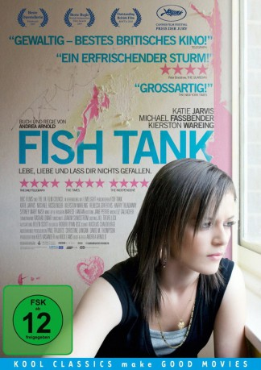
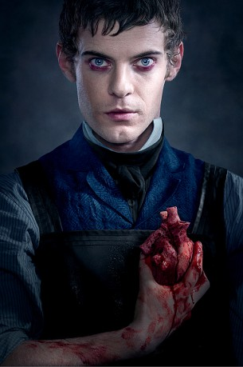

#2572 Fish Tank
Auszeichnungen: 1 BAFTA-Awards gewonnen
 
 IMDB-Wertung: 7.3 / 10
IMDB-Wertung: 7.3 / 10  Metascore: 81
Metascore: 81 
Mia (Katie Jarvis) sucht Streit, seit sie von der Schule geflogen ist. Mit ihrer Mutter, der frechen Schwester, den Mädels vom Block. Ein schiefer Blick und ihr platzt der Kragen, dass es kracht. Nur wenn sie für sich allein tanzt, ist sie für Augenblicke glücklich. Da steht an einem heißen Sommertag plötzlich ein halbnackter Mann in der Küche: Connor (Michael Fassbender), der neue Freund der Mutter. Mia ist fasziniert. Connor nimmt ihre Nöte ernst, er bringt eine Ahnung von Familienglück ins Haus. Doch wer ist dieser Mann, der kommt und geht? Und was will Mia? Einen Vater, einen Kumpel oder mehr?
Jahr: 2009
Dauer: 123 Minuten
FSK: 12
Land: England Studio: good movies!Tonspuren: DD5.1 - ,
Untertitel:
Auflösung: 1080p (1440x1080) Größe: 8366 MB
Genre: Drama
Regisseur: Andrea Arnold
Drehbuch: Andrea Arnold
Soundtrack: Phonso Martin
Darsteller:
- Katie Jarvis als Mia
 Michael Fassbender als Conor
Michael Fassbender als Conor Kierston Wareing als Joanne
Kierston Wareing als Joanne-  Harry Treadaway als Billy
- Jason Maza als Billy's Brother
- Jack Gordon als Billy's Brother
- Anthony Geary als Van Man
- Rebecca Griffiths als Tyler
- Sydney Mary Nash als Keira
- Carrie-Ann Savill als Tyler's Friend
- Toyin Ogidi als Tyler's Friend
- Grant Wild als Keeley's Dad
- Sarah Bayes als Keeley
- Charlotte Collins als Tall Dancing Girl
- Kirsty Smith als Dancing Girl
- Chelsea Chase als Dancing Girl
- Brooke Hobby als Dancing Girl
 Alan Francis als Free Runner
Alan Francis als Free Runner- Ben Francis als Free Runner
- Syrus als Tennents the Dog
- Michael Prior als Connor's Friend
- Dave Hawley als Snogging Man
- Lisa Mahoney als Snogging Woman
- Sarah Counsell als Social Worker
- Nick Staverson als Shouting Man
- Sunanda Biswas als Breaker
- Gavin Cooper als Breaker
- Amir Saleem als Breaker
- Jody Schroeder als Breaker
- Fase Alzakwani als Breaker
- Stella McGowan als Breaker
- Mia Copas als Breaker
- Hannah-Marie Keeble als Danton Road Girl
- Joanna Horton als Kelly
- Charlie Baker als Podium Girl
- Peter Roue als Club DJ
- Geoff McCracken als Club Man
- Val King als Club Woman
- Kishana Thomas als Audition Girl
- Raquel Thomas als Audition Girl
- Natasha Ilic als Audition Girl
- Maxine Brogan als Audition Girl
- Kirsty Page als Audition Girl
- Georgia Crane als Audition Girl
Datei: X:\2009(A-F)\Fish Tank (2009, FSK12, 1440x1080).mkv seit 24.11.2015
Festplatte: HD 2008(G-Z)-2009(A-F)
 Es gibt insgesamt 91 Filme in der Gruppe '2009(A-F)'
Es gibt insgesamt 91 Filme in der Gruppe '2009(A-F)'